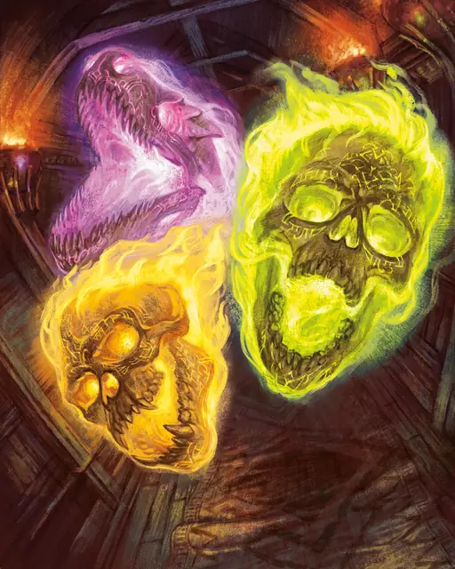

Пылающий череп
Flameskull
Крошечная Нежить, Нейтральная Злая

Класс Защиты 13 Инициатива +3 (13)
Хиты 40 (9к4 + 18)
Скорость 5 футов, Полёта 40 футов (парит)
| мод | спас | ||
|---|---|---|---|
| СИЛ | 1 | −5 | −5 |
| ЛОВ | 17 | +3 | +3 |
| ТЕЛ | 14 | +2 | +2 |
| мод | спас | ||
|---|---|---|---|
| ИНТ | 16 | +3 | +3 |
| МДР | 10 | +0 | +0 |
| ХАР | 11 | +0 | +0 |
Иммунитеты Некротический, Огонь, Яд; Испуганный, Истощение, Опрокинутый, Отравленный, Очарованный, Парализованный
Чувства Тёмное зрение 60 футов, пассивное Восприятие 12
Языки Общий
Опасность 4 (1 100 опыта; БВ +2)
Особенности
Свечение. Пылающий череп излучает Яркий свет в радиусе 15 футов и Тусклый свет ещё на 15 футов.
Сопротивление магии. Пылающий череп совершает с Преимуществом спасброски от заклинаний и прочих магических эффектов.
Восстановление нежити. Если пылающий череп уничтожен, спустя 1 час он восстанавливает все свои Хиты, если только его останки не сбрызнуты Святой водой или на них не сотворено заклинание Рассеивание зла и добра.
Действия
Мультиатака. Пылающий череп совершает две атаки Огненным лучом.
Огненный луч. Бросок рукопашной или дальнобойной атаки: +5, досягаемость 5 фт. или дистанция 60 фт. Попадание: 13 (3к6 + 3) урона Огнём.
Сотворение заклинаний. Пылающий череп сотворяет одно из следующих заклинаний, не нуждаясь в Соматических и Материальных компонентах (заклинательная характеристика — Интеллект, Сл спасброска заклинаний 13):
Неограниченно: Волшебная рука
2/день: Волшебная стрела, версия 2-го уровня
1/день: Огненный шар
Бонус мастерства +2
Среда обитания Горы, Подземье
Сокровища Оружейные
Пылающий череп
Тлеющий магической одержимостью череп
Пылающие черепа — это летающие черепа, полыхающие магическим огнём и полузабытыми тайнами мёртвых заклинателей. Они восстают из останков магов, оживлённых зловещими некромантами, или тех, чьи магические искания увлекают их за грань смерти. Пылающие черепа могут служить стражами при своих создателях, а могут преследовать честолюбивые замыслы, не завершённые при жизни. На врагов они обрушивают разрушительные заклинания и вспышки пламени, творя магию без нужды в большинстве компонентов.
Пылающие черепа принимают разные обличья: одни сохраняют почти человеческие черты, другие обзаводятся устрашающими или звериными очертаниями. Их пламя бывает разных цветов и разгорается ярче, когда они в гневе.
Совершите бросок по таблице «Особенности пылающего черепа» для вдохновения или определите сами облик пылающего черепа.
Особенности пылающего черепа
| 1к6 | У пламенного черепа… |
| 1 | На кости начертаны магические схемы. |
| 2 | Пламя свивается в гримасы, рога или волосы. |
| 3 | Раздробленные куски, летающие как единое целое. |
| 4 | Ко рту намертво прибита железная пластина. |
| 5 | Насмерть пробито темя при жизни. |
| 6 | Несочетаемые друг с другом звериные зубы. |